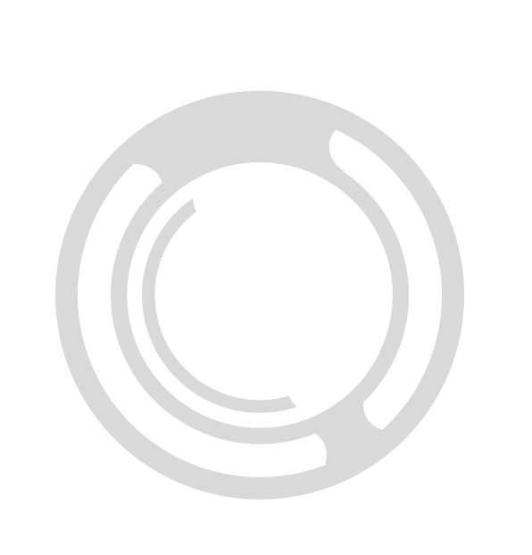
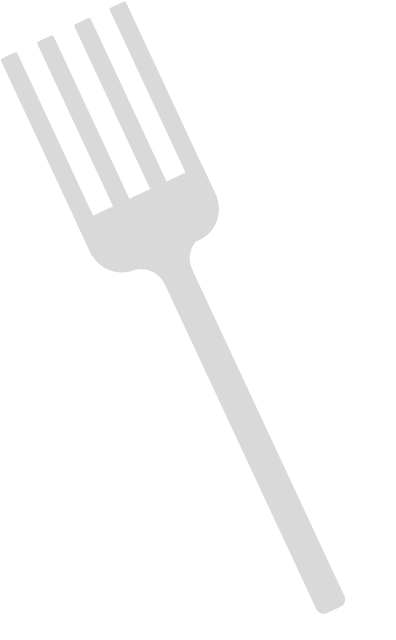
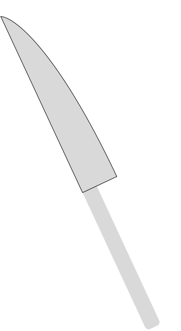
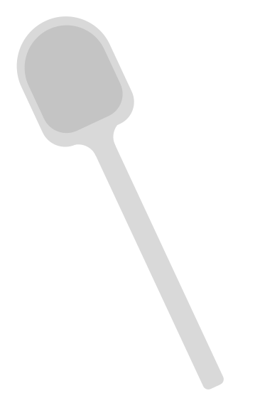
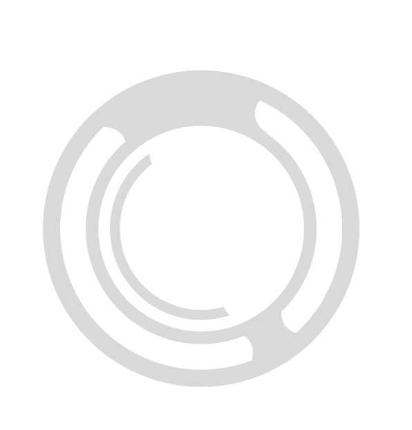
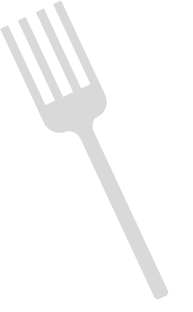
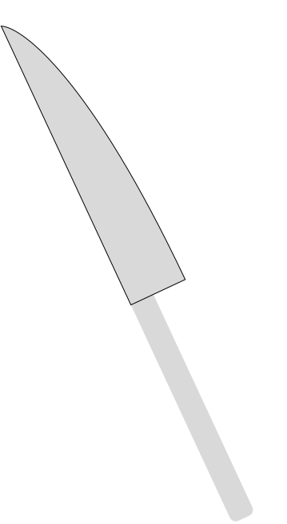
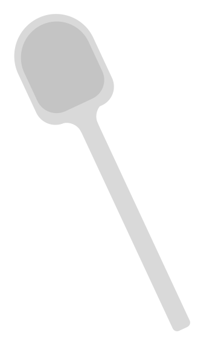

Principais Tarefas
Impactantes
- Web scrapper do site Menudino (criação, atualização, manutenção e documentação).
- Automação de VPN via template matching em screenshots de janela.
- Scripts geradores de metadados com NLP e LLM.
- Utilização eficiente dos metadados no recbot B2B.
- Endpoints de conversas do Recbot B2B e B2C (like/dislike/salvar mensagem).
- Reescrita completa dos endpoints de busca com unificação de pratos e restaurantes.
Secundárias
- Atualizações de manutenção e melhorias no backend do Recbot e scrapper WhatsApp.
- Página no notion com respostas para o Recbot.
- Leitura de 2 livros, 1 artigos, 1 PDF e 8 sites recomendados.
- Atualização de backup incremental no web scrapper do menudino.
- Formulação e melhorias de prompts no recbot e na geração de dados com LLM.
Novas Tecnologias Estudadas
MongoDB
Atlas, Compass, Charts, Aggregations, Indexes
XPath & Regex
Extração e tratamento de HTML
Azure OpenAI
Configuração, RAG, LLM local
Bootstrap & HTML5
Layouts responsivos
Otimizações Python
Pandas, Numpy, Numba
Estimativa de Horas
Total de semanas: 28 (5 meses de 4 semanas + 2 meses de 5 semanas + 1 semana de setembro + 1 de julho)
Estudo e código: ~280h (média de 10 horas por semana ou 5 horas por 2 dias da semana)
Reuniões: ~43h
Total estimado: ~323 horas